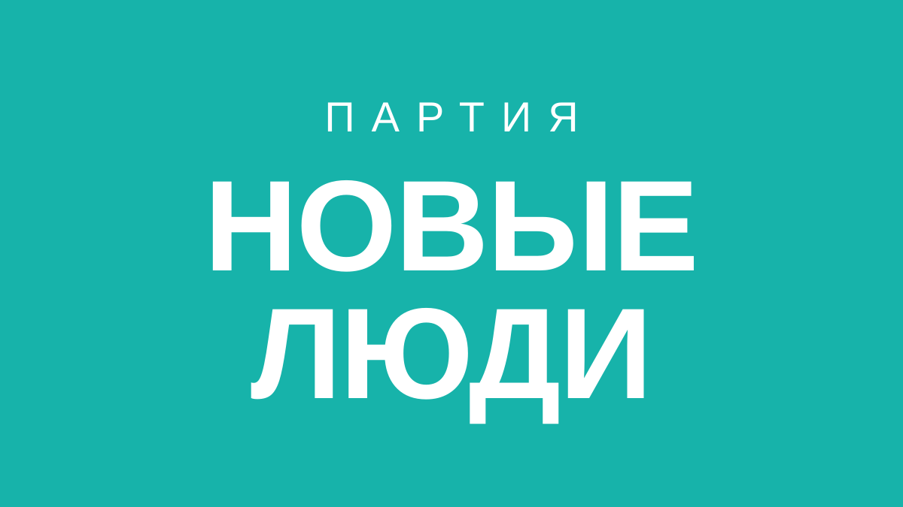

Мобилизация осенью 2026:
скажите своё слово
Независимый общественный опрос о возможной новой волне мобилизации в России. Голосование анонимное — чтобы принять участие, войдите и зарегистрируйтесь на платформе опроса.

Как вы относитесь к возможной новой волне мобилизации в РФ осенью 2026 года?
Голосование открыто после входа и регистрации на платформе опроса.
Результаты голосования
Предварительные данные опроса на текущий момент.
Как принять участие
Три простых шага — займёт меньше минуты.
Зарегистрируйтесь
Нажмите «Голосовать» и перейдите на платформу опроса, инициированного партией «Новые люди».
Подтвердите участие
Пройдите быструю проверку — это защищает опрос от накруток и ботов.
Проголосуйте
Выберите один из вариантов и отправьте голос. Анонимно и без лишних данных.
Об инициаторе опроса
«Новые люди» — политическая партия, которая выступает за перемены, открытый диалог и учёт мнения граждан при принятии важных решений. Этот опрос — способ услышать позицию людей по одному из самых чувствительных вопросов повестки.
- Независимый сбор мнений
- Прозрачные, агрегированные результаты
- Уважение к приватности участников
Частые вопросы
Это официальный референдум?
Нет. Это независимый неофициальный опрос общественного мнения, инициированный партией «Новые люди». Он не имеет юридической силы и создан, чтобы наглядно выразить позицию людей.
Зачем нужна регистрация и вход?
Чтобы обеспечить честность результата: один человек — один голос, без накруток и ботов. Регистрация и голосование проходят на платформе организатора.
Голосование анонимное?
Да. Итоги публикуются только в агрегированном виде. Ваш конкретный выбор не привязывается публично к личности.
Как обрабатываются мои данные?
Обработка данных при регистрации выполняется на платформе организатора в соответствии с её политикой конфиденциальности.